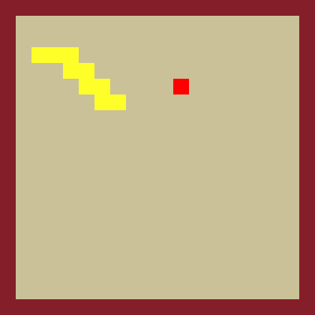

Justin Leung
justin.leung.ch@gmail.com
I'm a Computer Science student at the University of Waterloo. I previously worked at Queen's University Software Analysis and Intelligence Lab (SAIL), where I applied traditional machine learning techniques to provide insights to software engineering. Programming is a passion of mine - don't take my word for it, take a look at the work and projects I've done throughout the years. In my spare time, I enjoy exercising, reading, and cooking.
Work
Software Analysis and Intelligence Lab, Queen's University
Apr. — Sept. 2020Research InternLed project on Medium mining
Software Analysis and Intelligence Lab, Queen's University
Jul. — Oct. 2019Research InternUsed R and Python to preprocess and model 19.3M messages to study the Stack Overflow chat platform.
Projects
I enjoy working on a variety of projects in my spare time.
Emoji Ninja: P2P AI-Powered Fitness Webgame [demo] [code]
Keywords: javascript, node.js, react, express, p5.js, simple-peer, posenet
Cellular Automata Explorer [demo] [code]
Completed as part of the Harvard CS50X final project.
Keywords: react, three.js, d3.js, webapp, p5.js,
Novel Molecule Generation with Variational Autoencoders [code]
Keywords: python, tensorflow, keras, deep-learning
PixelPaper: Infinite Phone Wallpaper Generator [demo] [code]
Keywords: java, android, procedural-generation, personalization
Magnetic Pendulum [code]
Keywords:
Epicycles Simulator [demo] [code]

Keywords: javascript, p5.js, math
Snake Neural Network with Genetic Algorithms [code]
A neural network (built from scratch using Numpy matrices) trained to play Snake, generalizable to any game tile size. The neural network is trained using genetic algorithm concepts and techniques (tournament selection, random mutation, and fitness)
Keywords: python, numpy, neural-network, genetic-algorithm
Cookie or Donut Neural Network [code]
A vanilla neural network that classifies a doodle (a 256x256 grayscale bitmap) as a cookie, a donut, or neither. Trained using backpropagation algorithm on doodles from Google Quick, Draw! dataset (~1M images). Runs on Android. Neural network implemented from scratch using Numpy linear algebra module, weights transferred to a Java implementation of a prediction-only neural network I made using the ojAlgo library.
Keywords:
DIY VR Styrofoam Headset [code]

Keywords:
Arduino Pen Plotter [code]
Keywords:
Chemical Equilibrium Simulation [code]
Keywords:
Mulander: A Lunar Lander Clone [code]
Keywords: actionscript, gamedev, lunar-lander
Procedural Landscapes [code]
An implementation of the midpoint displacement algorithm, used to create random landscapes. Features vivid, randomized colours and starry skies to simulate the aesthetic of sci-fi planetscapes.
Keywords: c++, sfml, midpoint-displacement
Pong Clone in C++ [code]
My first project: a Pong clone implemented in C++ using the SFML graphics library.
Keywords: c++, gamedev, sfml